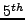
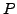
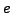

A novel high-order-accurate, fully-implicit solution algorithm for
all-speed, Navier-Stokes equations is introduced. It combines the
``recovery Discontinuous Galerkin'' (rDG) method for spatial
discretization of the hyperbolic and diffusion operators with the
``Explicit, Singly Diagonal Implicit Runge-Kutta'' (ESDIRK)
scheme for time integration. Both algorithms are implemented under the
``Jacobian-free Newton-Krylov'' (JFNK) framework. Since
hyperbolic and diffusion operators are fully-coupled, temporal
discretization errors due to operator-splitting are completely
eliminated. The algorithm is demonstrated to be high-(up to
)-order time-accurate in a wide range of Mach, Reynolds and
Péclet numbers even when the pressure-gradient, viscous and
heat-conduction operators become of comparable size. The rDG formulation
exhibits nearly-spectral accuracy (shown up to the -order) in
space. The Newton-Krylov (NK) solution is formulated in conservative
variables (i.e. density, ; total energy,  ; and momentum,
; and momentum,  ),
which allows one to stop Newton's iteration any time (if locked in the
limit cycle) without loosing conservation. The ESDIRK and rDG
discretizations provide natural utilities to compute a high-order error
estimate in both time and space, which is especially beneficial for
Adaptive Mesh Refinement (AMR) and time step control.
),
which allows one to stop Newton's iteration any time (if locked in the
limit cycle) without loosing conservation. The ESDIRK and rDG
discretizations provide natural utilities to compute a high-order error
estimate in both time and space, which is especially beneficial for
Adaptive Mesh Refinement (AMR) and time step control.
The main challenge is to ensure the efficiency of the JFNK linear solver, for which we employ the Jacobian-free version of the right-preconditioned GMRES method. The focus of this paper is the Physics-Based Preconditioning (PBP) of our rDG-JFNK algorithm. It is designed to ``cluster'' eigenvalues of the Jacobian matrix, ensuring convergence of the GMRES within a few Krylov iterations. Two PBP strategies, specifically designed for DG-type of spatial discretizations, are introduced and extensively tested.
The first PBP capitalizes on explicit availability of the higher-order derivatives in the DG local solution vector. The Jacobian matrix can be rearranged in the block-vector form. Each element of the Jacobian matrix is a matrix, and p is the highest order of the basis functions, representing non-local coupling of solutions between and cells (i.e. and ). is a local solution vector at cell j. Elimination of the off-diagonal blocks can be interpreted as freezing the nonlocal coupling at the previous Newton iteration. When used for preconditioning, this block-diagonal approximation not only provides a tight coupling of the local solution vector (which is very effective when the reaction terms are stiff), but also takes into account some non-local coupling since the spatial derivatives are the part of the local solution vector. We refer to this as ``Block-Diagonal''(BD) preconditioner, and its efficiency is demonstrated here in terms of a) the patterns of eigenvalues for the Jacobian matrix (``Eigenscopy''); and b) the number of the Krylov iterations/vectors required to converge the GMRES to a given linear tolerance.
The second PBP incorporates non-local effects. We split preconditioning into three steps, each targeting eigenvalues associated with a specific physics (i.e., heat conduction, stiff pressure waves and viscous operator). First, we transform the NK solution vector from conservative variables to primitive variables (i.e., pressure, ; velocity, : and internal energy, ). A consistent transformation of the higher order derivatives is carried out by enforcing the conservation in the weak sense. The resulting system can be cast into the following block-vector form,
where each element is a matrix, representing non-linear coupling between the and primitive variables.
In order to solve this coupled system, we first decouple the internal energy from the pressure-velocity matrix, solving for . Step I targets the heat conduction operator. Next, we formulate the pressure-Poisson equation as
where the Laplacian can be shown to be closely related to the Schur complement of the pressure-velocity matrix. This parabolic system can be solved efficiently using a multigrid method. Step II targets stiff pressure waves. Finally, we solve for velocity, accounting for viscous stress terms. In the 1D representation, this Step III can be written as
It can be easily seen that this PBP is closely related to the classical
``operator-split'' solution algorithms for incompressible and
weakly-compressible flows (e.g., ICE, SIMPLE, Projection). Therefore, we
referred to this as ``Operator-Split'' (OS) preconditioner. We
demonstrate that the OS preconditioner is very effective in clustering
generally-complex eigenvalues near the real axis. It is also found to be
very effective in a wide range of Mach ( ) and Reynolds () numbers,
keeping the number of GMRES iterations
) and Reynolds () numbers,
keeping the number of GMRES iterations  , even at the extremes of
and very low numbers.
, even at the extremes of
and very low numbers.